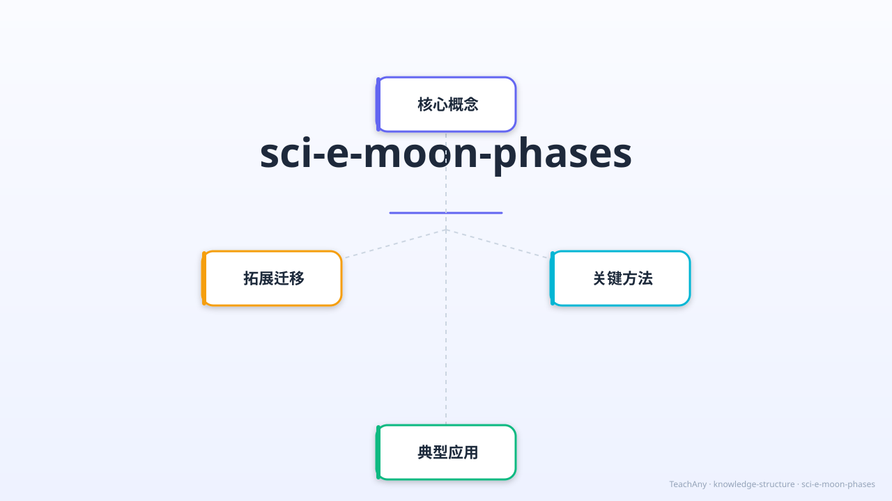

月亮为什么有时圆、有时弯？探索月相变化的奥秘，揭开天文现象背后的科学规律！

用故事思维激活你的好奇心
月亮是我们最熟悉的天体，每天晚上都能看到它。我们知道月亮绕着地球转，也知道地球绕着太阳转。月亮本身是一个球形的岩石星球，它的形状从来没有变化。
但是……为什么我们看到的月亮形状每天都在变化？有时候是圆圆的满月，有时候是弯弯的月牙，有时候甚至完全看不见！如果月亮形状没变，为什么我们看到的不一样呢？
因此，我们需要从月球公转的角度来思考这个问题——月球绕地球公转，我们站在地球上，看到被太阳照亮的月球部分不断变化，这就形成了月相！今天我们就来解开这个天文奥秘。
5个场景，22秒，看懂月相变化的全过程
8个月相全貌展示
俯视图动画，月球公转轨道
逐一展示每个月相形态
初一新月，十五满月
口诀与重点回顾
月球绕地球公转，太阳光照亮月球的不同部分
👆 点击不同的月球位置，观察从地球看到的月相
月球绕地球公转，周期约29.5天，与农历一个月相同。
月球本身不发光，我们看到的月光是太阳光的反射。
从地球看，月球在不同位置时，被照亮的可见部分不同，形成月相。
月相按固定顺序循环变化：新月→上弦月→满月→下弦月→新月。
从新月到满月，再回到新月，周期约29.5天
上弦月像字母 D——右边亮，傍晚西边天空（傍晚~午夜可见）
下弦月像字母 C——左边亮，后半夜东边天空（午夜~清晨可见）
初一新月，十五满月——农历日期与月相一一对应！
俯视图：拖动月球，实时显示你在地球上看到的月相
在轨道上拖动月球，右侧实时显示从地球看到的月相形态。
从地球上看到的月相：
把8个月相按照正确的顺序排列！
将下方月相卡片拖拽到上方排列区，按从"新月→满月→新月"的顺序排列：
答对每题解锁一枚成就徽章！
月相不只是天文现象，与我们的生活息息相关
满月和新月时，太阳、地球、月球三点共线，引力叠加，潮水最大（大潮）。
农历八月十五恰好是满月，古人选这天赏月团圆，这就是中秋节的由来之一。
古代航海者根据月相判断日期和季节，无GPS时代的重要导航工具。
渔民根据月相选择最佳捕鱼时机，大潮期间鱼群活跃，往往收获更丰。
农历以月相为基础，农民用农历安排播种、收获，与月相密切相关。
元宵节（正月十五满月）、中秋节（八月十五满月）都与月相直接相关。
把今天学到的装进记忆背包
约29.5天一循环
对应农历一个月
月球公转+反射阳光
可见部分不断变化
新月→上弦→满月
→下弦→新月
初一新月
十五满月